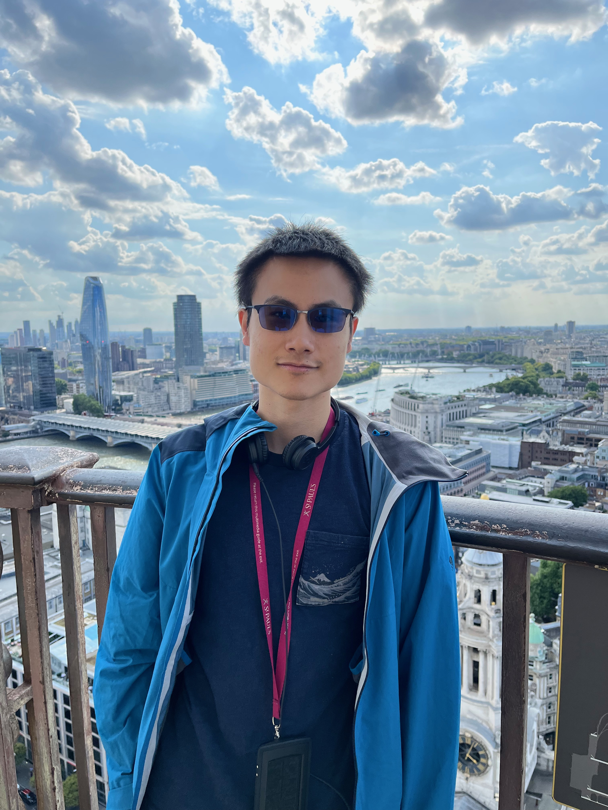

|
Qinghua Liu （刘清华）
|
 |
I am a Ph.D. student in the Deparment of Electrical and Computer Engineering at Princeton University. I am fortunate to be advised by Chi Jin.
My current research interests focus on reinforcement learning theory.
Previously, I received a B.E. degree in Electrical Engineering and a B.S. degree in Mathematics from Tsinghua University in 2018.
|
Recent works
Technical notes
|